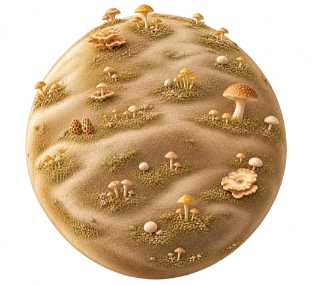
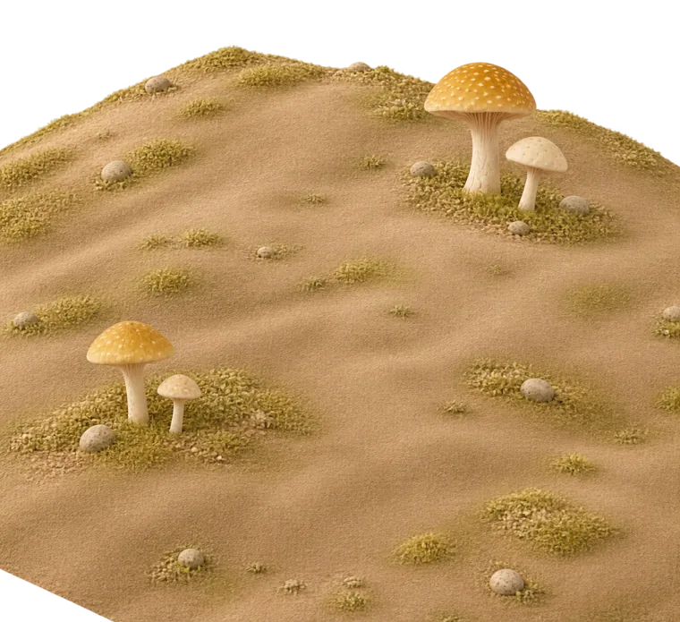
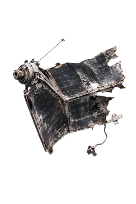
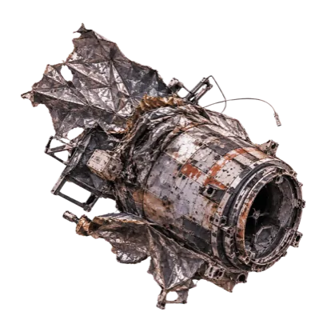
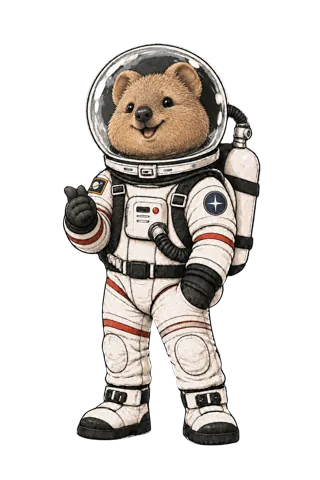

G L I M M E R
微光星系
壓測宇宙・完整航行試玩
登入 → 建角 → 四輪任務 → 開箱 → 漂流救援 → 回饋 → 結算大靜默之後，星球一顆一顆暗了下來。
每當有人重新讀懂一顆星球的訊號，那顆星就會再次亮起。
你，是新一代的引航員。

鵂鶹・指揮官
「本次航行為壓力測試：氧氣只配發兩瓶。迷思隕石帶答錯就會擦撞扣氧，其他任務安全。引航員，看好你的儀表板。」
身分確認
輸入學號，與本班艦隊名單核對
格式：B＋8 碼數字，或專班 E＋4 碼＋字母＋3 碼
測試學號：B11312056、B11416017、B11436062、E1141A001
名單核對成功
此學號已有角色——輸入建角時設定的 4 碼 PIN
是你本人嗎？
選擇你的引航員
本宇宙的六位夥伴正在舷窗後待命
點一下舷窗看介紹
你的星際代號
整學期的任務都會用這個名字
設定 4 碼 PIN（換手機找回角色用）
引航員登錄卡
GLIMMER PILOT
氧氣存量（壓測配額：2 瓶起航）
鵂鶹・指揮官
氧氣存量
星軌連線・訊號干擾源
星球登陸
進場中——抓穩了


？
溫暖星球・蕈菇居民
「其實……我本來只想看五分鐘『訊號盒』——就是你們藍星人說的『手機』啦——結果回過神來又是三個小時。最近整顆星球的人都這樣，大家越來越少跟彼此說話了。」
星球登陸
溫暖星球・居民小屋前
全班即時分布（匿名航跡）
登 陸 日 誌
氣閘判讀
訊號一張張進站——判讀它是警訊還是安全訊號
全班判讀
航行回饋
幫引航員總部調整下一次航行——約 30 秒
這趟航行好玩嗎？（1 無聊－5 超好玩）
操作順手嗎？（1 很卡－5 很順）
最喜歡哪幾關？（可複選）
哪些環節卡卡的、不好懂？（可複選）
想對總部說的話（可留空）
星球氣象回報
匿名回報你的星球氣象——安全作答，不扣氧
這一週，你的「獎賞星軌道」還穩嗎？
3
1 穩定運行5 嚴重偏移
選一個本週微行動：
全班氣象圖（軌道穩定度）
微行動承諾
穿越成功
氧氣存量
鵂鶹・指揮官
「雷達有反應——前方漂著一個貨櫃。運氣好是寶物，運氣不好……嗯，你會知道的。」
漂流貨櫃
點擊貨櫃開啟
來路不明・輕微旋轉中
回收零件 0／3 ・ 氧氣 –／5
寶物圖鑑
珍稀寶物（九種）
太空垃圾（六款）
M A Y D A Y
漂流中
氧氣用完不是結束——會有人來牽你回家
S O S



短尾矮袋鼠・微笑大使
「求救訊號已廣播給同學——要是兩週都沒人來，我親自去牽你。微笑大使永遠不會丟下任何人。」
請將手機轉直
繼續航行 🚀
繼續航行 🚀
V O Y A G E C O M P L E T E
航行結算
最終氧氣存量
航行戳章
獲得稱號